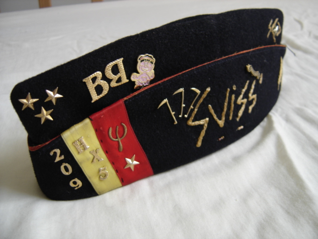
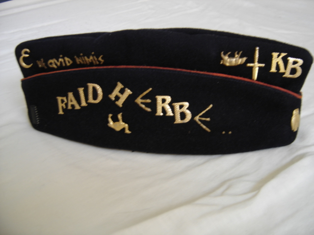

Charte du Khâlot:
| Taupe | Khâgne | Véto | Agro | HEC |
  |
LES KHÂLOTS, CHARTE OFFICIELLE Dans
la plupart des prépa vous verrez passer de drôles de
personnes : "ils sont dingues, ils portent un chapeau ridicule!" Note historique, apparement les Khâlots sont un dérive des "faluches" portées autrefois en fac ; comme vous pourrez le constater sur ce site les insignes sont très semblables mais certains ont été modifiée au fil du temps. |
Article
1 On porte le khâlot comme on porte ses origines : avec fierté et dignité |
Article
2 Le khâlot est porté de nos jours de façon habituelle ou à titre exceptionnel lors des manifestations estudiantes. On ne l'enlèvera pas même devant un professeur hargneux |
Article
3 Il est interdit de faire du khâlot une succursale de Monoprix : il doit être le parchemin qui s'enorgueillit toujours des nouvelles richessses de l'histoire du bachelier. |
Article
4 Le préparationnaire doit impérativement se soumettre à ces dispositions assez larges pour permettre toutes les fantaisies et assez strictes pour réaliser l'uniformité. |
Article
5 Pour les Bizuths (sauf pour les BB), le khâlot se porte en Pi/2 jusqu'à la St-Nicolas où aura lieu la cérémonie d'inversion du khâlot |
Article
6 Les couleurs des khâlots (voir haut de la page) |
Article
7 Les lettres du baccalauréat (à l'arrière du khâlots) (voir page dédiée) |
Article
8 Les fonctions (voir page dédiée) |
Article
9 Le velour peut porter les insignes du lycée, ville d'origine, votre devise, vos armes personnelles, etc... Dans tout les cas se référer à l'art.3 |
Article
10 Les bizuths artistes ayant du goût peuvent personnaliser leur khâlot sous réserve de copyright (attention aux imitations sur 5/2) |


© A Marlière 2002, réalisé avec DreamweaverMX et FireworksMX, optimisé pour une résolution 800*600